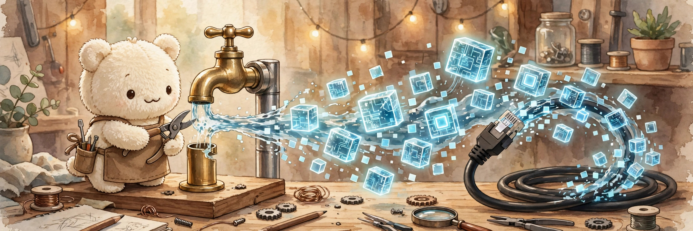

Follow your own message from App → TLS 1.3 → TCP → IP → Ethernet → Physical Wire → Routers → Server B

Every mechanism under the microscope, in the open literature — and the rest of the networking shelf in this collection.
> select a door — it opens in a new window